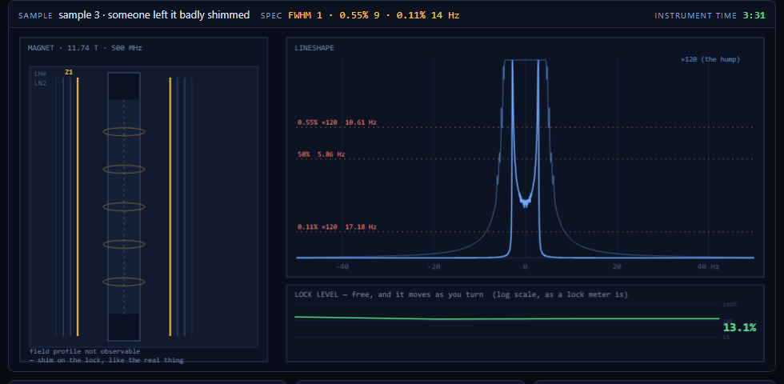

Shim
Shim
Get a 500 MHz magnet to lineshape spec before the instrument time runs out. The controls are the ones on a real console; the line you are judged on is the histogram of B₀ over the sample.
▶ Run the console Spin sandboxPixel Plumber
The first build — a small Mario-like platformer with a low-gravity zone, a frictionless ice zone and a live readout of the constants behind the jump.
▶ Play Pixel Plumber
Why this, and not another platformer
The first attempt at an NMR game was a side-scroller. It failed for a reason worth writing down: it turned parameters into props. A 90° pulse became a pad you walked over. The receiver became a hoop you ran through. A paramagnetic impurity became an enemy that chased you. None of those are things; they are settings, and the drama of a real instrument is not collecting them but living with the consequences of getting them wrong.
So this one keeps a classic loop but throws the props away. The loop is Lunar Lander's — continuous control of a physical quantity, a budget that runs down, an unforgiving target, and failure you can read off the screen and fix. The quantity is the magnetic field over the few centimetres of sample the coil can see. The target is a lineshape spec. The budget is instrument time.
The physics is the game
The line a spectrometer draws is the histogram of B₀ across the sample volume, convolved with the natural Lorentzian. That is not a metaphor here — it is literally the sum the program evaluates. Which means the shape of the line tells you which shim is wrong, and the game cannot fake it:
| Mis-set shim | Field it adds | Signature you see |
|---|---|---|
| Z1 | linear gradient, z |
flat-topped and wide — the field runs evenly end to end, so every frequency in the range is equally represented |
| Z2 | curvature, z² − ⅓ |
narrow peak, broad one-sided base — barely moves the half-height width while wrecking the base, which is exactly why a hump test exists separately |
| Z3 | cubic, z³ − 0.6z |
symmetric shoulders either side of the peak |
| Z4 | quartic | a one-sided shoulder further out |
Learning to read those is the actual skill, and it is the thing a shim trainer is for. The specs were then tuned by measurement rather than by feel: for every sample, leaving any one shim undialled fails the spec, while getting every shim within about 15% of truth passes it. So no shim in any level is decoration.

What the console actually gives you
- The lock level is free and continuous, and it is only a number. You shim by maximising it, exactly as you would at the bench. It is drawn on a log scale because peak height runs over three decades between a wrecked shim and a good one.
- A lineshape costs 8 seconds of instrument time, and the spec is judged on a measurement, never on the lock. You have to spend time to find out where you are.
- Autoshim costs 45 seconds and gets you roughly two thirds of the way, the way a real routine does. It will not finish the job.
- The hump widths are read off a ×120 blow-up of the baseline, drawn under the main trace, because 0.55% of the height is invisible at full scale.
A plain hill-climb on the lock alone solves the first two samples and then gets stuck in a local maximum on the harder ones — a narrow peak sitting on a ruined base. That is not a bug in the simulation; it is the reason lock-only shimming is not enough and why the lineshape test is a separate step.
Also here
The spin sandbox — free play on the Bloch engine that drives all of this: sliders for T1, T2, shim and offset, one-click single-pulse acquire, Hahn echo, CPMG and inversion recovery, with the packet fan, the FID and the spectrum side by side. The engine is verified against closed form — the echo peaks at 35.0 ms against a predicted 34.6, and at 0.791 M₀ against a predicted 0.792.
That 5 ms is worth a footnote. The textbook answer is that the echo lands at 2τ = 40 ms.
It does not: the refocusing envelope peaks at 2τ but is multiplied by a falling
e^(−t/T2), which pulls the maximum earlier by 1/(4π²σ²T2). The
simulation was right and the first prediction was wrong.
Pixel Plumber — the first build, kept because it is where the idea of making constants visible started: a low-gravity zone, a frictionless ice zone, and a readout of the numbers behind the jump. Its jump apex measured 99.5 px against a predicted 105.1.
Built with
Plain HTML5 canvas, CSS and JavaScript — no engine, no dependencies, no build step. The spin
physics lives in spin/bloch.js and is shared with the sandbox; the field and
lineshape model is in spin/console.js. Built and verified with Claude Code —
including the level tuning, which was done by measuring the simulation rather than guessing.